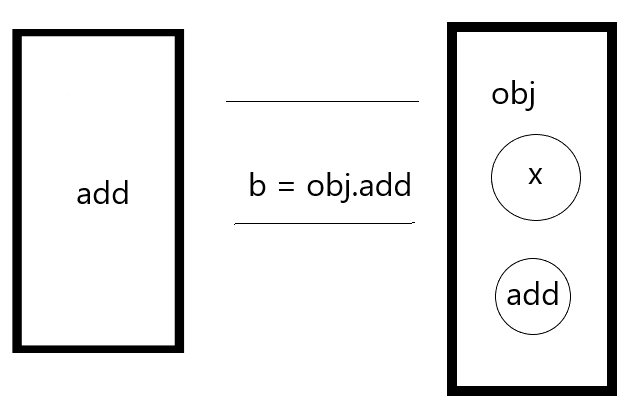
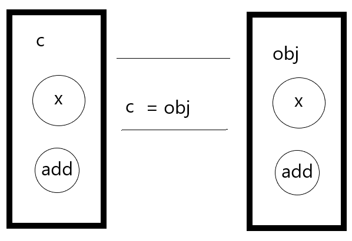

this关键字，用着很舒服，那么你真的了解它吗？
this是在函数被调用时确定的，它的指向取决于函数调用的地方，而不是它被声明的地方（箭头函数除外）。
当一个函数被调用时，会创建一个执行上下文，它包含函数在哪里被调用、函数的调用方式、传入的参数等信息，this就是这个记录的一个属性，它会在函数执行时用到。
默认绑定
1 | let obj = { |

上图是obj.add赋值给变量b。执行b函数时为什么拿到得是undefined呢？
因为b函数的this指向的是window，window对象中没有x属性所以是undefined。
为什么指向的是window呢？
因为this的指向取决于函数调用的地方，b函数执行相当于是这样的：
1 | function b () { |
b函数是在全局作用域中调用的，所以this指向的是window
在来看看c变量

add函数是在c的作用域中调用的，所以this指向的是c
隐式绑定
当一个函数调用时有上下文对象，隐式绑定会将上下文对象绑定到函数中的this。
1 | function add () { |
显式绑定
使用apply、call、bind 方法，在函数调用时通过参数的形式传入绑定的this。
1 | function add () { |
call方法调用时做了什么？模拟写一个call方法：
1 | Function.prototype.byCall = function (context) { |
new绑定
使用new来调用函数，会执行下面的操作：
- 1：创建一个新的对象
- 2: 构造函数的prototype被赋值给了这个新对象的proto
- 3: 新对象赋值给当前的this
- 4: 如果函数没有返回其他对象,那么new表达式中的函数调用会自动返回这个新对象
一个简单的例子:1
2
3
4
5
6function add () {
console.log(this)
}
const a = new add()
a /*打印的是构造对象add*/
add() /*打印的是window对象*/
模拟写一个new方法,看看new操作符做了啥操作
1 | function news (context) { |
new将需要构造的函数原型(prototype)赋值给了新对象的proto,然后返回新对象
优先级
上面说的4种绑定规则,其实它们是有一个先后顺序的,如下:
new > 显式绑定 > 隐式绑定 > 默认绑定
箭头函数中的this
箭头函数的和普通函数得区别就在于:
1：箭头函数没有自己的this，而是通过箭头函数最近一层的非箭头函数决定的，所以箭头函数的this指向在箭头函数被定义的时候就已经确定了，之后无法改变。
2：箭头函数没有arguments，但是可以通过ES6的展开运算符获取。
2：箭头函数没有构造函数constructor，不能使用new
🌰1：1
2
3
4
5
6
7
8
9
10
11
12
13
14
15var a = '10'
function a1 () {
setTimeout(function () {
console.log(this.a)
}, 2000)
}
function a2() {
setTimeout(() => {
console.log(this.a)
}, 2000)
}
a1.call({a: 110}) // 10
a2.call({a: 110}) // 110
上面这个例子,a1中的setTimeout中使用普通函数,2秒后执行函数,函数是在全局的作用域中执行的,所以this指向的window拿到的是10。
但是a2函数中的setTimeout中使用的箭头函数，这个箭头函数在this确定时就定义了，指向的a2函数的this,当a2.call执行时，call改变了this.a的对象属性，所以输出了110。
🌰2：
1 | let arr = (num) => { |
因为全局环境是没有arguments对象的，所以报错内容 arguments is not defined
1 | let arr = (...num) => { |
🌰3：
1 | let arr = () => { |
以上就是我对this比较基础的理解，如有漏，请评论补充。